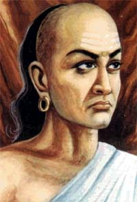

About Chanakya's
Life story

Acharya Chanakya (350-275 BCE) , he traditionally
identified as Kautilya or Vishnu Gupta
Birth
Chanakya's birthplace is unknown , possibly Acharya
Chanakya born in Kusumpur near Pataliputra (modern day Patna) city in ancient
India . According to the Buddhist text Mahavamsa Tika, his birthplace was
Taxila. According to some other Jain accounts, he was a native of South India.
His father name was "Chanak"
When Chanakya was born he had a full set of teeth,
which is a sign that he would become a king or an emperor. But since he was born
in a Brahmin family, it was considered inappropriate. Thus, his teeth were
broken and it was predicted that he would make another person a king and rule
through him
Even as a child, Chanakya had the qualities of a born
leader. His level of knowledge was beyond children of his age.
Chanakya's Education
Rishi Canak named his son as "Chanakya". Being a
teacher himself, he knew the importance of education. Taxila was one of the
world centres for education. At a very early age little Chanakya started
studying Vedas. The Vedas; considered to be the toughest scriptures to study
were completely studied and memorized by Chanakya in his infancy. He was
attracted to studies in politics. In politics Chanakya’s acumen and shrewdness
was visible right from childhood. He was a student of politics right from child
hood. Known as a masterful political strategist, He knew how to put his own
people in the opposite camp and spy the enemy without his knowledge before
destroying him forever. Chanakya was an ace in turning tables in his favour
irrespective of the circumstances. He never budged to pressure tactics by the
ruthless politicians. In this way after studying religion and politics, he
turned his attention to economics, which remained his lifelong friend.
"Nitishastra", a treatise on the ideal way of life shows his in depth study of
the Indian way of life
Life as a student
Takshashila, (later corrupted as Taxila),one of the
topmost centers of education at that time in India became Chanakya’s breeding
ground of acquiring knowledge in the practical and theoretical aspect. The
teachers were highly knowledgeable who used to teach sons of kings. It is said
that a certain teacher had 101 students and all of them were princes! The
university at Taxila was well versed in teaching the subjects using the best of
practical knowledge acquired by the teachers. The age of entering the university
was sixteen. The branches of studies most sought after in around India ranged
from law, medicine, warfare and other indigenous forms of learning. The four
Vedas, archery, hunting, elephant-lore and 18 arts were taught at the university
of Taxila. So prominent was the place where Chanakya received his education that
it goes to show the making of the genius. The very requirements of admission
filtered out the outlawed and people with lesser credentials.
After acquiring vast knowledge in various branches of
study he wanted everybody to get benefited. He believed in the broadcasting of
knowledge and not in the storage of it. So famous was Chanakya in the vicinity
of the university that he had many nicknames. He was called variously by
different people, namely – Vishnugupta, Kautilya and Chanakya. The whole nation
was bewildered by the cleverness and wit of this seemingly small boy who went on
to single handedly unify the country with the sheer power of his character. He
lived his life working to his capacity in pursuit of his vision of a happy
strong and prosperous India.
Taxila University
At a time when the Dark Ages were looming large, the
existence of a university of Taxila’s grandeur really makes India stand apart
way ahead of the European countries who struggled with ignorance and total
information blackout. For the Indian subcontinent Taxila stood as a light house
of higher knowledge and pride of India. In the present day world, Taxila is
situated in Pakistan at a place called Rawalpindi. The university accommodated
more than 10,000 students at a time. The university offered courses spanning a
period of more than eight years. The students were admitted after graduating
from their own countries. Aspiring students opted for elective subjects going
for in depth studies in specialized branches of learning. After graduating from
the university, the students are recognized as the best scholars in the
subcontinent. It became a cultural heritage as time passed. Taxila was the
junction where people of different origins mingled with each other and exchanged
knowledge of their countries. The university was famous as "Taxila" university,
named after the city where it was situated. The king and rich people of the
region used to donate lavishly for the development of the university. In the
religious scriptures also, Taxila is mentioned as the place where the king of
snakes, Vasuki selected Taxila for the dissemination of knowledge on earth.
Here it would be essential to mention briefly the
range of subjects taught in the university of Taxila.
(1) Science,
(2) Philosophy,
(3) Ayurveda,
(4) Grammar of various languages,
(5) Mathematics,
(6) Economics,
(7) Astrology,
(8) Geography,
(9) Astronomy,
(10) Surgical science,
(11) Agricultural sciences, (12) Archery and Ancient
and Modern Sciences.
The university also used to conduct researches on
various subjects.
Commotion in Taxila
Gandhar Republic was not able to come out of the shock
of the comprehensive defeat at the hands of the province of Porus, when a new
contingency starred in the eyes of Taxila. Thousands of refugees poured in
Taxila as a result of the widespread attacks of the armies of Alexander. These
people were not productive for the state as they didn't come to Taxila to
acquire knowledge or in search of jobs. They didn't have money or any kind of
assets to buy themselves the essential commodities. To resolve the problem, a
meeting was convened by the rulers of the neighboring countries and the king of
Taxila. The knowledgeable people who gathered to give their opinions on the
problem faced by Taxila, gave out their suggestions. At the end of the meeting,
it was decided that the refugees must be given cover under humanitarian grounds.
So, in line with the decision taken, a stretch of land outside Taxila was
allotted for the refugees. They were allowed to enter Taxila after proving their
identity with the sentry. In this way what appeared to be a calamity was
appeased without
much ado. The incident was just a precursor to a
series of events which reverberated across India as a result of the attacks of
Alexander.
Move towards Patliputra
Though Chanakya was just a professor in the Taxila
University which seemed to be far away from the happenings in the country, he
actually was able to influence the governments in a big way. His students looked
at him as an ideal teacher who inspired and exemplified great knowledge. His
students respected him and were ready to fight at any moment at his orders. Two
of his students who have been mentioned at various instances were Bhadrabhatt
and Purushdutt. In the events that unfolded in the life of Chanakya, these two
played a pivotal role in the achievement of his goals. It is rumored that they
acted as spies for Chanakya, collecting information about his enemies.
Somehow, Chanakya came to know that there was a chance
of foreign invasion. Europe’s great warrior Salukes was readying his armies to
attack the weakened republics of India. There were grave designs threatening the
unity and integrity of the nation. In such a scenario the ruler of Patliputra,
Mahanand was squeezing the common man of his wealth with an object of enriching
his own exchequer. Chanakya was aware of the internal and external threats of
the country. On the one hand, the rulers of the neighboring countries were
looking for the slightest of chance to annex the prosperous regions of the
country and on the other hand, foreign invaders started moving towards the
country with an expectation of easily smothering the country. These thoughts
gave Chanakya sleepless nights. He envisioned his country clutched in the chains
of slavery and defeated because of internal squabbles and differences. So he
decided on the historical day, thus saying,
"Now the time has come to leave the university. The
scrupulous rulers of the country must be uprooted and there is a need to
strengthen the country politically and economically. My first and foremost duty
is to save the country of the foreign invaders and salvage this dangerous
proposition."
With these thoughts in mind, he left Taxila University
for Patliputra which paved the way for watershed changes in the politics of
India and Patliputra.
Patliputra – The city of fortunes
Patliputra, (presently known as Patna) has been
historically a very important city politically and strategically. Like Delhi,
Patliputra has seen the ups and downs of development and great reversals. The
well known Chinese traveler Fahian, who visited the city in 399 BC described it
as prosperous city endowed with rich natural resources. At the same time,
another Chinese traveler Huen sang described it as a city of rubbles and ruins.
Shishunagvanshi established the city on the southern
bank of the Ganges. It was addressed with different names at different times.
To. illustrate a few names, Pushpapur, Pushpanagar, Patliputra and Patna.
The city was industrious in producing essential
commodities and luxurious goods for the rich. When Chanakya entered the city, it
was known for respecting knowledgeable people and scholars. The intellectuals
from across the country were warmly invited for the intercourse of new ideas and
development of the state. It was virtually the city of fortunes as it recognized
the true talent and rewarded richly for the work done by an individual. No
wonder Chanakya decided to start his glorious campaign from Patliputra.
"I will destroy you"
Dhanananda, the ruler of Patliputra was unscrupulous
and cruel by nature. He was always busy gathering money without thinking about
consequences. He was always dissatisfied with the amount of money he had.
Collecting taxes exorbitantly, he was a villain in the public eye. There was
public outrage on the taxes which were collected on unwanted things. The main
aim of collecting taxes was to serve the selfish interests of the king. There
were taxes on hides, tax on wood and tax even on stone! The amount of money
which Dhanananda had was unimaginable.
When Chanakya arrived at Patliputra, there was a
change in the way he ran his kingdom. He gave gifts to the poor and was on the
way of becoming lenient in administration. He had formed a trust or committee to
administer his gifts and charities. The committee was headed by scholars and
influential people of the society. It is said that the president had the powers
to make up to ten million gold coins.
Since Chanakya was a great scholar from Taxila, he was
included in the committee for charity. Chanakya later on became the president of
the ‘Sungha’ (Trust). The Sungha used to help the king in the distribution of
the money allotted for charity to the different sections of the society. In the
process of delegation of the funds for charity, the president of the trust had
to meet the king frequently. When Chanakya met the king for the first time, he
was disgusted at the ugly appearance of Chanakya. As time passed he developed
contempt for Chanakya. There was no refinement in words and conduct. To increase
the fire between Dhanananda and Chanakya, the courtiers dissuaded the king from
having a cordial relationship with Chanakya. Chanakya acted like a thorough
professional and avoided praising the king. He always spoke bluntly and tersely.
The king did not like the way Chanakya behaved with him. The king removed
Chanakya from the post of president without any reasons. Chanakya was enraged at
the proposition of being exploited by the less knowledgeable king. So, he
erupted like a volcano on the king, and said, " Arrogance in you has eroded the
respect which I had for you. You have removed me from the presidentship for no
fault of mine. You can’t act in a way detrimental to the demeanor of a king. You
think there is none to question you? You have removed me from my rightful place
and I will dethrone you !"
Chanakya meets Chandragupta
Just after getting humiliated from the king, Chanakya
scampered through the streets of Patliputra. In a hurried walk, he stumbled upon
a stump of grass and was about to fall. Chanakya the great scholar had his own
style of handling things. He looked at the roots of the grass and quickly got
into action. Though he was angry, he never let his anger to get out of control.
He directed the anger in the right direction. Calmly, he sat down in the burning
sun, removed that grass from the roots from the earth. After making sure that
not even a single strand of grass is left, he resumed his journey.
While Chanakya was engrossed in removing the grass
from the ground, a young man was closely watching the act of Chanakya. The young
man was Chandragupta, the would be emperor of the Mauryan Empire. He looked
bright. Looking at the determination of Chanakya, he was impressed and wanted to
talk to the knowledgeable man.
He went to Chanakya, addressed him respectfully, and
took him into the choultry. Chanakya asked him about his family background
beginning his talk by asking, "Who are you? You seem to be worried."
The young man stepped forward with great reverence and
said, "Sir, my name is Chandragupta. Yes, you are correct I am in great trouble
but should I trouble you with my worries?"
Chanakya calmed down the young man by saying, "You can
tell me about your troubles with freewill and without any ambiguities. If I am
capable enough, I’ll definitely help you."
"I am the grandson of king Sarvarthasiddhi, He had two
wives, Sunandadevi and Muradevi. Sunanda got nine sons called the Navanandas.
Mura, had only one which was my father. The Nandas tried to kill my father time
and again. We were more than hundred brothers. The Nandas out of jealousy, tried
to kill all of us. Somehow I survived and I am totally disgusted with my life. I
want to take revenge on the Nandas who are ruling over the country presently."
Chanakya who was freshly wounded by the Nandas found a
companion to destroy the distraught king. Chanakya was greatly moved by the tale
of woe. He was emotionally charged listening to the story of Chandragupta and
vowed to destroy the Nandas and get Chandragupta his rightful place as a king of
Patliputra. Chanakya said "I will get you the kingship, Chandragupta. From that
day on Chanakya and Chandragupta worked in tandem to destroy the corrupt and
unscrupulous rule of the Nandas.
Chandragupta has not been well documented. The place
of birth, family background and several details regarding his life are not
available. Several things have been said and written about his family and
parents. Probably, he belonged to the Moria community. He might have got the
name Chandragupta Maurya afterwards and his royal lineage was known as the
Maurya dynasty. His mother was perhaps the daughter of a village headman. His
father was the king of a forest area called Pippatavana, who died in a war.
Chandragupta came to Patliputra along with his mother.
As a boy Chandragupta was a born leader. Even as a
boy, he was accepted as a leader by all. As a boy he used to mimic the king’
court. His bravery and shrewdness were visible right from childhood. As Chanakya
was moving along the streets of Patliputra, he saw little Chandragupta enacting
the king. Sitting on the large throne, the little boy shouted against injustice
and corrupt practices of the kings and people in general. Looking at the bright
face of Chandragupta, he was impressed at the intellect and wisdom in the boy’s
voice. For seven or eight years Chandragupta had his education there, and that
too with selected teachers shortlisted by Chanakya himself. The art of warfare
and the art of governance were mastered by Chandragupta with equal expertise.
The Greek invader
The relationship between Chandragupta and Chanakya
bloomed through the years developing into a strong force for their enemies. Most
of the historical events took place right under the eyes of Chanakya and
Chandragupta. The troops of Alexander and the umpteen number of invaders who
ravaged the subcontinent for decades around India. It is said that Chandragupta
met Alexander. The bold and arrogant talk by Chandragupta enraged Alexander as a
result of which Chandragupta was arrested. Chanakya’s training to Chandragupta
was over by now and he thought it to be the right occasion to let Chandragupta
taste the practical aspect of warfare. Chanakya closely observed the movement
and strategies employed by Alexander. He also became aware of the weaknesses of
the Indian rulers.
Freedom from the Greeks
The rustic boy that Chandragupta was, now had matured
into a sound military commander. The source of strength for Chandragupta and his
army was the power of mind and the towering personality of Chanakya. In that war
of independence for northern India, Chandragupta was the physical instrument,
while its thinking brain was Chanakya.
The deterioration of the prowess of Alexander happened
because of the weakening of Satraps or the commanding officers. Niccosar, a
Satrap was killed even when Alexander was alive. Another formidable Satrap
called Philip, was killed weakening Alexander like never before. After
Alexander’s death in Babylon, all his Satraps were either killed or dislodged ,
one by one. Alexander’s lieutenants divided his empire among themselves in 321
BC. No realm east of the Indus – the River Sindhu was mentioned in that
settlement. It meant that the Greeks themselves had accepted that this region
had gone out of their rule.
Defeat of the Nanda king
Before defeating the Nandas, Chanakya had to employ
various strategies before victory. Chanakya firstly tested the policy of
attacking the core of the city. The policy met with defeats again and again.
With the change in strategy, Chanakya and Chandragupta began the attack on the
borders of the Magadha Empire. Again there were mistakes. The troops were not
stationed in the areas conquered. So when they marched forward, the people of
the conquered areas joined together again and encircled their army. Thus those
who had been defeated had to be fought again and again
Chandragupta and Chanakya learnt lessons from these
mistakes. They now stationed troops in the conquered regions. So those enemies
would not raise and cause any trouble. Chanakya with his cleverness had earlier
won the friendship of king Parvataka (or Porus Second). Now Parvataka, his
brother Vairochaka and son Malayeketu came with their armies to help them. The
Nanda king had the support of a big army. The other equally important support
was the guidance of his very able minister, Amatya Rakshasa. This minister was
very intelligent and had unlimited loyalty to the king. Chanakya knew that
getting Amatya out of his way was the only way of defeating King Nanda. Chanakya
devised a plan which involved planting of spies in the enemy camp. In a very
short span of time, the weaknesses of the Nandas became visible. Parallely, the
Nandas and Amatya Rakshasa made plans to counter any attacks by Chanakya.
Details are not available regarding the war between
the Nandas on the one hand and Chandragupta and Chanakya on the other. But it
was a keen and bitter fight. The Nanda king died. His sons and relatives also
died. Even Amatya Rakshasa was helpless. Chandragupta was victorious proving the
foresight of Chanakya regarding his abilities. The old king and his wife retired
to the forest. It is said that after sometime Chanakya had the old king and his
wife killed , because he thought that if Amatya Rakshasa made them take a son by
the rights of adoption, there would be claimants to the throne. He wanted the
lineage of the Nandas should be totally eliminated.
The true aspect of Chanakya
The momentous life of Chanakya reminds us of a
revengeful saga where the individual is obsessed by the idea of taking revenge.
But personal revenge was not the aim of Chanakya. He wanted that the kingdom
should be secure and that the administration should go on smoothly, bringing
happiness to the people. He thought that there were two ways of ensuring the
happiness of the people. Firstly, Amatya Rakshasa had to be made Chandragupta’s
minister; Secondly, a book must be written, laying down how a king should
conduct himself, how he should protect himself and the kingdom from the enemies,
how to ensure law and order, and so on.
By writing "Arthashastra" and "Nitishastra", Chanakya
has become a
never ending phenomena. He has truly guided the
generations with his
wisdom . It would ideally suit the closing of the life
of Chanakya with a
couple of quotations by Chanakya
"The secret task of a king is to strive for the
welfare of his people incessantly.
The administration of the kingdom is his religious
duty. His greatest gift would
be to treat all as equals."
"The happiness of the commoners is the happiness of
the king. Their
welfare is his welfare. A king should never think of
his personal interest
or welfare, but should try to find his joy in the joy
of his subjects."
These words were written 2300 years ago by Chanakya,
the expert
statesman and wise sage. And Chanakya is also another
name for
courage and perseverance.